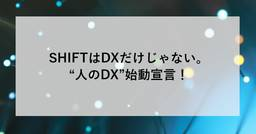
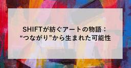
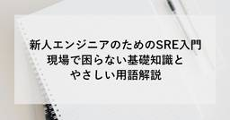
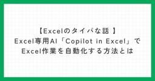
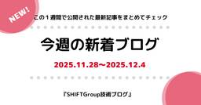

SHIFT Group 技術ブログ
https://note.shiftinc.jp
「無駄をなくしたスマートな社会の実現」を目指し、ソフトウェア製品の開発、運用、マーケティングなどあらゆる立場から携わるSHIFTグループの公式note。エンタメ・ゲーム業界から、Web系、金融／製造／小売りなどのエンタープライズ領域まで広い知見を活かした情報を発信しています。
フィード

SHIFTはDXだけじゃない。“人のDX”始動宣言！
SHIFT Group 技術ブログ
🎄こちらは、For Everyone アドベントカレンダー2025 Day.10 の記事です。For Engineers アドベントカレンダー2025の記事も毎日公開していますので、ぜひあわせてご覧下さい！🎁Qiitaでも公開中 SHIFT Group 技術ブログ - Qiita Advent Calendar 2025 - Qiita続きをみる
2日前
【PMOノウハウ11】 課題管理表はあるのに課題が放置される問題
SHIFT Group 技術ブログ
🎄こちらは、For Engineers アドベントカレンダー2025 Day.10 の記事です。For Everyone アドベントカレンダー2025の記事も毎日公開していますので、ぜひあわせてご覧下さい！続きをみる
2日前

SHIFTが紡ぐアートの物語｜“つながり”から生まれた可能性
SHIFT Group 技術ブログ
はじめまして。株式会社SHIFT ビジネスサポート部 アーティストチームの串田です。私は「カタツムリ」というペンネームで、絵画制作や文章業務を担当しています。SHIFTには、職種や働き方の多様性に惹かれて入社しました。 続きをみる
3日前
IT未経験からIT講師になった話
SHIFT Group 技術ブログ
🎄こちらは、For Engineers アドベントカレンダー2025 Day.9の記事です。For Everyone アドベントカレンダー2025の記事も毎日公開していますので、ぜひあわせてご覧下さい！🎁Qiitaでも公開中 SHIFT Group 技術ブログ - Qiita Advent Calendar 2025 - Qiita続きをみる
3日前
日本の朝にDXを！「月曜から朝かつ！」が今の時代に必要な理由
SHIFT Group 技術ブログ
🎄こちらは、For Everyone アドベントカレンダー2025 Day.9 の記事です。For Engineers アドベントカレンダー2025の記事も毎日公開していますので、ぜひあわせてご覧下さい！🎁Qiitaでも公開中 SHIFT Group 技術ブログ - Qiita Advent Calendar 2025 - Qiita続きをみる
3日前
経験値を渇望するあなたに伝えたい、有志活動のすすめ｜25新卒がSHIFTの大運動会を復活させた話
SHIFT Group 技術ブログ
🎄こちらは、For Everyone アドベントカレンダー2025 Day.8 の記事です。For Engineers アドベントカレンダー2025の記事も毎日公開していますので、ぜひあわせてご覧下さい！🎁Qiitaでも公開中 SHIFT Group 技術ブログ - Qiita Advent Calendar 2025 - Qiita続きをみる
4日前

新人エンジニアのためのSRE入門――現場で困らない基礎知識とやさしい用語解説
SHIFT Group 技術ブログ
🎄こちらは、【For Engineers】アドベントカレンダー2025 Day.8の記事です。【For Everyone】アドベントカレンダー2025の記事も毎日公開していますので、ぜひあわせてご覧下さい！続きをみる
4日前

【Excelのタイパな話 】Excel専用AI「Copilot in Excel」でExcel作業を自動化する方法とは
SHIFT Group 技術ブログ
🎄こちらは、【For Engineers】アドベントカレンダー2025 Day.7の記事です。For Everyone アドベントカレンダー2025の記事も毎日公開していますので、ぜひあわせてご覧下さい！🎁Qiitaでも公開中 SHIFT Group 技術ブログ - Qiita Advent Calendar 2025 - Qiita続きをみる
5日前
【技術ブログでそれ言う？】技術があっても思考がズレていると成果が出ないと学んだ話
SHIFT Group 技術ブログ
🎄こちらは、For Everyone アドベントカレンダー2025 Day.7 の記事です。For Engineers アドベントカレンダー2025の記事も毎日公開していますので、ぜひあわせてご覧下さい！🎁Qiitaでも公開中 SHIFT Group 技術ブログ - Qiita Advent Calendar 2025 - Qiita続きをみる
5日前

今週の新着ブログ 20本_今年もアドカレ開始！多彩な記事をお届けします★(2025.11.28~2025.12.4)
SHIFT Group 技術ブログ
こんにちは！「SHIFTグループ技術ブログ」編集部です。お役立ち記事を発信していますので、ぜひご注目ください！！本ブログは、IT技術だけでなくSHIFTグループのあらゆる知見やノウハウを広義の“技術”とし、入社歴や部署の垣根を超えて従業員が公式ブロガーとして記事を執筆しています。続きをみる
6日前
OpenAPIから型定義を自動生成して TypeScriptの型管理を効率化する
SHIFT Group 技術ブログ
🎄こちらは、For Engineers アドベントカレンダー2025 Day.6 の記事です。For Everyone アドベントカレンダー2025の記事も毎日公開していますので、ぜひあわせてご覧下さい！続きをみる
6日前
時系列でふりかえる！2歳男子ワーママの復職後のリアルライフ
SHIFT Group 技術ブログ
🎄こちらは、For Everyone アドベントカレンダー2025 Day.6 の記事です。For Engineers アドベントカレンダー2025の記事も毎日公開していますので、ぜひあわせてご覧下さい！🎁Qiitaでも公開中 SHIFT Group 技術ブログ - Qiita Advent Calendar 2025 - Qiita続きをみる
6日前

非エンジニア広報だけど技術ブログで毎年アドベントカレンダーをやる理由と効果｜ブログ担当者の記録
SHIFT Group 技術ブログ
🎄こちらは、【For Everyone】アドベントカレンダー2025 Day.5 の記事です。【For Engineers】アドベントカレンダー2025 の記事も公開していますので、ぜひあわせてご覧下さい！【For Engineers】IT技術、IT資格勉強ノウハウ 等【For Everyone】教育、キャリア、マーケティング、イベントレポ、IT業界未経験体験記 等🎁Qiitaでも公開中 SHIFT Group 技術ブログ - Qiita Advent Calendar 2025 - Qiita続きをみる
9日前
Ansible Playbookを実行するPowershellモジュールを作る
SHIFT Group 技術ブログ
🎄こちらは、For Engineers アドベントカレンダー2025 Day.5 の記事です。For Everyone アドベントカレンダー2025の記事も毎日公開していますので、ぜひあわせてご覧下さい。続きをみる
9日前
第5回カタン企業対抗戦｜SHIFTカタン部による開催レポート
SHIFT Group 技術ブログ
🎄こちらは、For Everyone アドベントカレンダー2025 Day.4の記事です。For Engineers アドベントカレンダー2025の記事も毎日公開していますので、ぜひあわせてご覧下さい！続きをみる
10日前
信頼性がクリスマスプレゼント！？ ～アポロ8号とSREの意外な関係～
SHIFT Group 技術ブログ
こちらは、For Engineers アドベントカレンダー2025 Day.4 の記事です。For Everyone アドベントカレンダー2025の記事も毎日公開していますので、ぜひあわせてご覧下さい。続きをみる
10日前
今週の新着ブログ9本_Excel業務フル自動化_子育てシフトガイド_人間味あるAI面接官 ほか(2025.11.21~2025.11.27)
SHIFT Group 技術ブログ
こんにちは！「SHIFTグループ技術ブログ」編集部です。お役立ち記事を発信していますので、ぜひご注目ください！！本ブログは、IT技術だけでなくSHIFTグループのあらゆる知見やノウハウを広義の“技術”とし、入社歴や部署の垣根を超えて従業員が公式ブロガーとして記事を執筆しています。続きをみる
10日前
拡張性がとっても高い画期的なGUIのOSだったんだよ、Microsoft Windows 95との思い出
SHIFT Group 技術ブログ
🎄こちらは、For Everyone アドベントカレンダー2025 Day.3の記事です。For Engineers アドベントカレンダー2025の記事も毎日公開していますので、ぜひあわせてご覧下さい！続きをみる
11日前
クライアントワークでのスクラムマスターとアジャイルコーチの難しさ
SHIFT Group 技術ブログ
🎄こちらは、For Engineers アドベントカレンダー2025 Day.3 の記事です。For Everyone アドベントカレンダー2025の記事も毎日公開していますので、ぜひあわせてご覧下さい！続きをみる
11日前
会議を動かし成果を出すファシリテーション術
SHIFT Group 技術ブログ
ただ議事録を取るだけじゃない、議論を前に進める実践テクニックみなさん、こんにちは。SHIFTの澤です。突然ですが、会議や打ち合わせで「議論がまとまらない」「結論が出ない」と感じたことはありませんか？ファシリテーターの役割は、単に議事を記録することではなく、議論を前に進め、参加者全員の意見を引き出して意思決定につなげることです。本記事では、実務者がすぐに使えるファシリテーションの具体テクニックや準備・進行のコツ、失敗しないためのポイントをわかりやすく解説します。続きをみる
11日前
移行計画書目次案の考え方!！
SHIFT Group 技術ブログ
方針レベルから仕様レベルまでの体系的アプローチこんにちは、SHIFTの澤です。プロジェクトが進む中で、「どこまでを移行方針として整理し、どこから詳細として書き込むべきか判断が難しい」と感じた経験はありませんか？特に、移行対象が多層にわたり、システム間の依存関係が複雑な案件では、目次構成そのものが迷走し、後工程で大幅な修正が必要になる場合もあります。続きをみる
11日前
心理的安全性の実践──100名のグループ会が育ててきた“つながり”のデザイン
SHIFT Group 技術ブログ
🎄こちらは、For Everyone アドベントカレンダー2025 Day.2の記事です。For Engineers アドベントカレンダー2025の記事も毎日公開していますので、ぜひあわせてご覧下さい！続きをみる
12日前